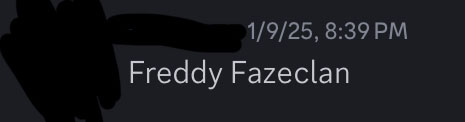
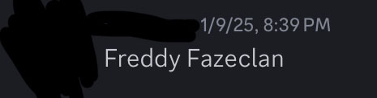

I like taking pictures of bugs.


Metal Music and Chaotic Youtube Videos are a favored form of entertainment.


I do not miss needing to remember my assignments. Duolingo helps me learn Deutsch and Norsk.


Gmail, Discord, and sometimes Bluesky is where most of my online presence lies.

 
